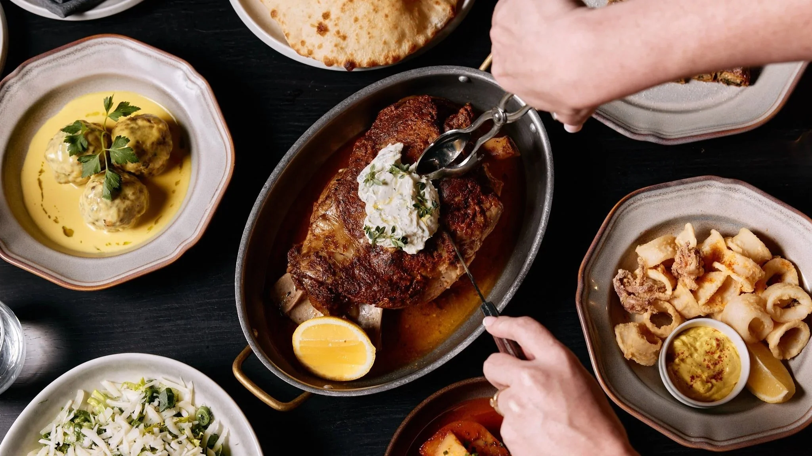
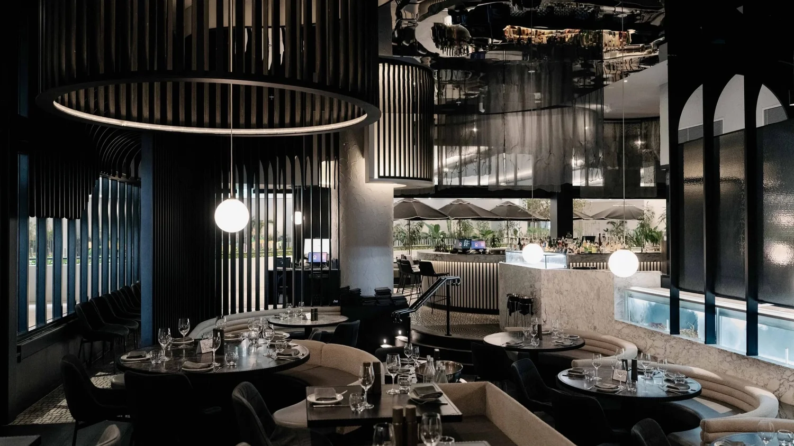

Mediterranean restaurant · The Star Brisbane
The flock gathers where fire meets feast.
By night, the embers smoulder, lamb surrenders, and flavours rise. By day, Mediterranean warmth takes the room.

Born of fire
White Pyrenees lamb, live seafood tanks, dry-aged craft.
Lamb is the heart of the feast here: revered, dry-aged, and brought to the Marana Forni oven for charred precision.
The menu follows with seafood, tender grilled meats, pillow bread, Greek salata, woodfired octopus, lamb shoulder, and a drinks list built for depth and intrigue.
Uncover the offerings
Fire, flavour, and flair across the table.


Host boldly
Dining room energy or a curtained room for ten.
The 120-seat venue carries sandy beige booths and marble tables; the semi-private 10-seater is veiled for quieter celebrations.
"
Here, the dark and the bright find harmony. Lamb, revered as the heart of the feast, meets fire's embrace.
When the embers glow.
All Day Dining · 7 Days · 11am-Late · The Terrace, Level 4, The Star Brisbane.
Make a booking